Prediction, Inference, and Causality I
DATASCI 285 · Fall 2026
Next up

Checking your course work…
Class meetings
Lectures are on Tuesdays and Thursdays from 4:00–5:15pm. Fridays from 2:30–3:20pm are for homework review—going over solutions to the previous week’s homework and taking questions on the current one.
I will hold office hours weekly on Fridays at 1:00 PM in PAIS 583.
Schedule
Homework is assigned Thursday and due the following Thursday. Fridays are for reviewing the previous homework and taking questions on the current one.
Part 1: One-Sample Inference
| Date | Class and assignments |
|---|---|
| Th Aug 27 | Introduction: The Social Pressure Experiment · HW −1 out · HW 0 out [view] [download template] |
| F Aug 28 | HW 0 questions and prerequisite review |
| T Sep 1 | Sampling |
| Th Sep 3 | Point and Interval Estimates · HW 0 due [solutions] [view] [download template] · HW 1 out [view] [download template] |
| F Sep 4 | Review HW 0; questions on HW 1 |
| T Sep 8 | Calibrating Interval Estimates |
| Th Sep 10 | Sampling with Replacement and the Binomial Distribution · HW 1 due [solutions] · HW 2 out [view] [download template] |
| F Sep 11 | Review HW 1; questions on HW 2 |
| T Sep 15 | Sampling without Replacement and the Hypergeometric Distribution |
| Th Sep 17 | Bootstrap · HW 2 due · HW 3 out |
| F Sep 18 | Review HW 2; questions on HW 3 |
| T Sep 22 | Random Variables and Moments |
| Th Sep 24 | Standard Deviation, Markov, and Chebyshev · HW 3 due · HW 4 out |
| F Sep 25 | Review HW 3; questions on HW 4 |
| T Sep 29 | Normal Approximation and its Sample-Size Payoff |
| Th Oct 1 | Bias and Coverage · HW 4 due · Practice Exam 1 out |
| F Oct 2 | Review HW 4; Practice Exam 1 questions |
| T Oct 6 | Review |
| Th Oct 8 | Practice Exam Review |
| F Oct 9 | Practice Exam 1 questions |
| T Oct 13 | No class (Fall Break) |
| Th Oct 15 | Exam 1 |
| F Oct 16 | Exam discussion |
Breather Unit: Distributional Approximation
This unit is not on either exam.
| Date | Class and assignments |
|---|---|
| T Oct 20 | Stein’s Method and Normal Approximation |
| Th Oct 22 | Poisson Approximation · HW 5 out |
| F Oct 23 | Questions on HW 5 |
Part 2: Two-Sample Problems, Randomization, and Models
| Date | Class and assignments |
|---|---|
| T Oct 27 | Block Sampling and the Difference in Group Means |
| Th Oct 29 | Randomization and Causality · HW 5 due · HW 6 out |
| F Oct 30 | Review HW 5; questions on HW 6 |
| T Nov 3 | Why Randomization Works |
| Th Nov 5 | Combining Sampling and Randomization · HW 6 due · HW 7 out |
| F Nov 6 | Review HW 6; questions on HW 7 |
| T Nov 10 | Conditioning I: Conditional Probability, Expectation, and Variance |
| Th Nov 12 | Conditioning II: Iterated Expectation, Indicators, and Conditional Differences in Group Means · HW 7 due · HW 8 out |
| F Nov 13 | Review HW 7; questions on HW 8 |
| T Nov 17 | Observational Studies and Confounding |
| Th Nov 19 | Models · HW 8 due |
| F Nov 20 | Review HW 8 |
| T Nov 24 | No class (Thanksgiving break week) |
| Th Nov 26 | No class (Thanksgiving) |
| F Nov 27 | No class (Thanksgiving recess) |
| T Dec 1 | TBD |
| Th Dec 3 | Review · Practice Exam 2 out |
| F Dec 4 | Practice Exam 2 questions |
| T Dec 8 | Practice Exam Review |
| Dec 10–19 | Exam 2 |
Class practices
Communication
I prefer to speak with students in real time rather than via email. That helps us get to know each other better and tends to lead to more efficient communication. The office hours listed above are set aside entirely for you; you don’t need to make an appointment and can come and go as you please. I prefer that you attend in person, but if you can’t make it to campus, I’m happy to talk via Zoom. If you’d like to meet outside of these hours, please email me to set up an appointment. I’ll do my best to respond to emails within 48 hours.
Please bring a laptop with an updated version of R to every meeting, as you’ll need it for some in-class activities. It may be worth bringing a tablet, too, as the lecture slides on this website embed a little whiteboard app. You can take notes, do calculations, and draw sketches right on top of them. That’s what I’m doing when I’m presenting the slides.
Homework
Homework will be assigned weekly, posted Thursday and due the following Thursday at 11:59pm. In the week before each exam, a practice exam replaces the regular homework. These will be a mix of calculations by hand and computer, often accompanied by sketches or plots to illustrate what’s going on visually; structured data analysis tasks; and communication tasks that address the methods and results of some data analysis (your own or somebody else’s) using a mix of sketching and writing. Collaboration on homework is encouraged, whether with classmates or with AI tools. I prefer that you use these as you would a good study partner: discuss problems, talk through ideas, get unstuck. And then write your solutions yourself, in your own words. The homework is where you learn, and the writing is how you and I both know you’ve learned it.
Readings, assignments, and course materials will be available through our class website. Homework will be submitted via Canvas. Please submit your work as a single PDF or HTML file with answers to each question in order and clearly labeled. And please try to keep your submissions concise. In particular, include code only if it’s asked for explicitly and plots only if asked for explicitly or you’re using them to illustrate a point you’re making in your answer. In that case, your text should refer to the plot explicitly and explain where to look and what we’re meant to see. In short, write your answers knowing that somebody is going to read them and would prefer not to work harder than necessary to understand what you’re saying. I’m not asking for beautiful formatting. It’s fine, for example, to write answers by hand, take photos, and stick them in a PDF as long as everything is legible, labeled, and in the right order.
Answer each question in its answer block. Working on paper is totally fine—just take a photo and include it. To include a photo: put the image file in the same folder as this document and write , using your photo’s filename.
Set up once
- Download and install Positron.
- In Positron, open Extensions in the sidebar, search for tlda classroom, and install tlda Classroom.
- Register for the class, then choose Continue to class.
Every assignment
- Answer each question inside its answer block.
- Add photos by pasting or dragging them into the document. Do that and the file is copied next to your document automatically, which is what makes it travel with your work. (Writing
by hand works too, as long as the photo really is in the same folder.) - Render it. Click Render, and read what comes out. This is the step that catches a broken formula or a photo that is not where you think it is, while you can still fix it.
- Hand it in. Open the Command Palette and choose Homework: Submit.
If it reports a problem, fix that problem and try again.
Accessibility and accommodations
As the instructor of this course I endeavor to provide an inclusive learning environment. I want every student to succeed. The Department of Accessibility Services (DAS) works with students who have disabilities to provide reasonable accommodations. It is your responsibility to request accommodations. In order to receive consideration for reasonable accommodations, you must register with the DAS here. Accommodations cannot be retroactively applied so you need to contact DAS as early as possible and contact me as early as possible in the semester to discuss the plan for implementation of your accommodations. For additional information about accessibility and accommodations, please contact the Department of Accessibility Services at (404) 727-9877 or accessibility@emory.edu.
Writing Center
Tutors in the Emory Writing Center and the ESL Program are available to support Emory College students as they work on any type of writing assignment, at any stage of the composing process. Tutors can assist with a range of projects, from traditional papers and presentations to websites and other multimedia projects. Writing Center and ESL tutors take a similar approach as they work with students on concerns including idea development, structure, use of sources, grammar, and word choice. They do not proofread for students. Instead, they discuss strategies and resources students can use as they write, revise, and edit their own work. Students who are non-native speakers of English are welcome to visit either Writing Center tutors or ESL tutors. All other students in the college should see Writing Center tutors. Learn more, view hours, and make appointments by visiting the websites of the ESL Program and the Writing Center. Please review the Writing Center’s tutoring policies before your visit.
Honor Code
The Honor Code is in effect throughout the semester. By taking this course, you affirm that it is a violation of the code to cheat on exams, to plagiarize, to deviate from the teacher’s instructions about collaboration on work that is submitted for grades, to give false information to a faculty member, and to undertake any other form of academic misconduct. You agree that the instructor is entitled to move you to another seat during examinations, without explanation. You also affirm that if you witness others violating the code you have a duty to report them to the honor council.
Assessment
Final grades will be a weighted average of scores on Homework (40%) and Two Exams (30% each). Each exam covers one unit.
Homework
We’ll have homework weekly as described above. Your homework score will be the average of your scores on the homework assignments after dropping the lowest three. This is meant to allow some slack for busy weeks, illness, or other circumstances that might keep you from doing your best work. I will not be granting extensions, but if you find yourself burning through this slack due to circumstances that make it difficult to complete multiple assignments, talk to me. We can work something out. I’m here to help you learn, not to make your life difficult.
Exams
There will be two exams, one per unit. Exam 1 will be during a lecture meeting time. Exam 2 will be held during the assigned final exam period (Dec 10–19). These exams will be closed-notes, but I will provide whatever formulas I think are relevant and will try to provide additional ones if you ask for them during the exam. Collaboration is not allowed on the exams. Nor is the use of any electronic devices other than a calculator.
The curve
Grades will be curved at the end of the semester. While I can’t tell you the exact curve in advance because there’s a lot to learn about what is and isn’t challenging when we write a new exam, averages above 75% in my classes have historically been curved to an A or an A- and averages about 60% to a B or a B+. I’ll provide additional guidance on the interpretation of your exam scores during the semester. You are not in competition with your classmates for a limited number of A’s. I’m not curving to get any particular distribution of grades. I’m curving so I can ask interesting questions to help you learn and solidify your understanding instead of calibrating the exam so it’s easy enough to get 90% of them correct. This is a tradition in upper-level math classes and, while it can take a little getting used to, I think it’s ultimately a good one.
Appeals
In order to appeal a grade, students must submit a written appeal by email no sooner than 24 hours after receipt of the graded assessment and no more than 2 weeks after the grade was posted/returned. I may regrade the sub-portion of the assessment being appealed and the regrade is final. The regrade may result in a higher, lower, or the same score. Please limit appeals to cases where you believe I’ve made a mistake or misunderstood what you’ve written.
Incompletes
Incomplete grades are now handled by Emory’s Office of Undergraduate Education, with permission of instructors. The College’s general policy on Incompletes can be found here; further questions can be directed to your OUE Academic Advisor. There must be an agreement between the instructor and the student prior to the end of the course for approval of an Incomplete, in addition to the approval from OUE.
About the course
This is the first semester of a two-semester integrated introduction to probability and statistical data analysis that provides a foundation for upper-level classes in the department. We will focus on prediction (using data we have to tell us something about data we don’t), statistical inference (characterizing the uncertainty we have about the accuracy of these predictions), and causal inference (understanding what the relationships we see in the data tell us about the impact of actions we might take). Probability concepts—random variables, expected values, conditional distributions—are introduced as they’re needed to understand the statistical methods we’re developing, rather than as a separate prerequisite. While the class will emphasize the intuitive and mathematical foundations of these concepts, we will also cover the implementation of these techniques in applications using the statistical programming language R.
This semester covers one-sample inference and two-sample comparisons, including causal inference in randomized experiments. The second semester covers regression analysis using linear models and concludes with an extended application to causal inference in observational studies.
This two-semester sequence will be accepted in place of the QTM 210–220 sequence as a prerequisite and there is substantial overlap in content. There will be a greater emphasis on the precision with which we move from stories and intuition to formal mathematical reasoning (and back) in this course. Data visualization, including sketching by hand and plotting in R, will be emphasized as a tool for making this connection. Being precise about how and why our methods work makes it easier to adapt them to answer new questions and work with new types of data.
Goals
By the end of this course, students will be able to:
- Formulate research questions in plain language and mathematical terms, expressing clearly what they want to know (the estimand) and what group they want to know it about (the population). For questions about causality, this will involve potential outcomes, a formalism for thinking about populations that differ in some way—for example, in who received what treatment—from the population that actually exists.
- Estimate the estimand by training a predictive model using a random sample from the population and appropriately combining its predictions, relying—where necessary—on randomization of treatment to get estimates with meaningful causal interpretations.
- Characterize the error of this estimate, using confidence intervals to quantify uncertainty due to random sampling and discussing, in plain language, possible sources of bias and what both mean for the accuracy of their estimate and the coverage of their confidence interval.
- Interpret others’ work in the same terms, for example identifying the estimand, population, and sample; describing the predictive model used and how its predictions are combined to form an estimate; summarizing their claims about accuracy; finding possible sources of error; and describing how these errors might affect the validity of the study’s conclusions in mathematical terms and in plain language.
- Demonstrate proficiency in statistics-relevant programming skills in R, including data simulation, modeling, and visualization.
- Demonstrate proficiency in statistical communication with both expert and lay audiences, including mathematical terminology or analogies as appropriate and sketches and approximations that capture the essence of a complex analysis.
Background knowledge
No prior exposure to probability or statistics is assumed. This class builds those up from scratch. What you will need is calculus (Math 210 or 211 or equivalent) and some basic R programming skills (QTM 150 or equivalent). You’ll be reading and reusing code rather than writing it from scratch, so if you’re not familiar with R but have experience programming in another language, you should be fine. The second semester will additionally draw on linear algebra (Math 221 or equivalent).
If you’re interested but not sure if you’re prepared, reach out and we’ll talk.
Should you take this sequence or QTM 210–220?
The core content and organization of this sequence and QTM 210–220 are similar, but this one will be more tightly integrated, more mathematically rigorous, and a bit broader in scope. In particular, in addition to using the homework to get some practice working with the methods we’re covering in lecture, we’ll use it to explore some variations on them. The intention is to develop skills and confidence that’ll help you tackle new problems by adapting what you already know. As a result, this class will probably be a bit more work than QTM 210–220 at times.
If you’re planning to learn more about machine learning or causal inference methods or work in an area that uses them, you’ll probably find that there are some gaps between what you’ll need there and what you’d learn in QTM 210–220. Or in this class. Gaps are inevitable. What’s intended is that, with this one, you’ll have a bit of a head start. You’ll have the kind of understanding and practice that makes it easy to identify the gaps and to work through them. The time you’d save then might be worth the extra time you’d put in now taking this class. It might be more fun, too.